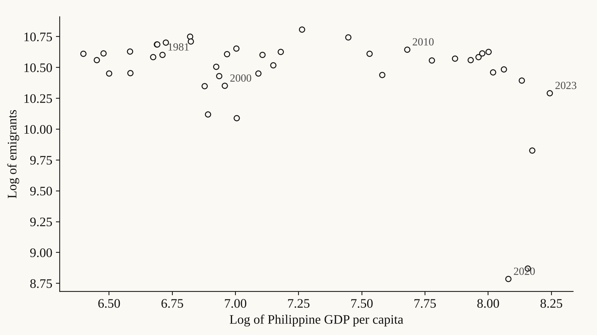

Projects · Macroeconomics · Migration · ARDL modeling
Philippine Emigration ARDL Macroeconomic Analysis
An econometric analysis of how macroeconomic conditions relate to Philippine emigration trends.

Context
I explored how macroeconomic conditions relate to Philippine emigration trends.
Data
Annual Philippine emigration, GDP per capita, government consumption, labor share, and PHP–USD exchange-rate series from 1981 to 2023, with matching US indicators.
Method
I used Stata, ARDL bounds testing, ECM modeling, and time-series diagnostics.
Output
Econometric models, ARDL outputs, and migration-analysis documentation.
Findings
Five of seven ARDL specifications showed a long-run relationship. In the baseline model, a 1% rise in Philippine GDP per capita is linked to a 0.46% fall in long-run emigration, and error-correction terms of −0.56 to −1.00 mean most deviations close within a year. COVID-19 produced a large negative level shift.
Reflection
I’d like to expand this with structural-break analysis and cross-country comparisons.
Figures
